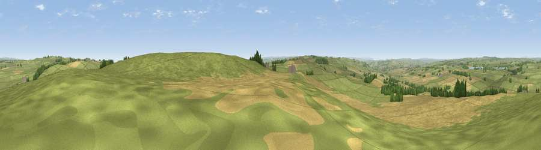

Viewpoint near Great Whittington
#9307 in England · top 15% of its area beats it · near Great WhittingtonThe view, rendered

A 360° render of this exact spot computed from the terrain model, tree cover and land cover — summer colours, afternoon light, calibrated against photographs of famous viewpoints. Real trees, hedges and buildings will differ in detail.
The panorama
Grey silhouette: terrain skyline in each direction (720 bearings, Earth curvature and refraction included). Dashed green: skyline with trees (+15 m) and buildings (+8 m) as obstacles. Blue strip: how far the ground is visible on each bearing.
Where the view opens
Wedge length = distance to the farthest visible ground on that bearing (vegetation-aware). Rings at 10, 25 and 50 km.
What fills the view
67% grassland · 28% cropland · 4% woodland
Angular shares of the visible panorama (visual magnitude), not map area. Landscape diversity 0.34 (0–1 Shannon).
Key numbers
More beautiful places nearby
The staircase of upgrades: each row has a higher view potential than everything closer. Driving times are estimates from straight-line distance, calibrated against real road routing — check an actual route before setting out.
| Place | Direction | Drive | Score |
|---|---|---|---|
| Duns Moor | SE · 0 km | ~1 min | 65.6 |
| Viewpoint near Chollerford | SW · 6 km | ~12 min | 67.5 |
| Viewpoint near Fourstones | WSW · 10 km | ~20 min | 71.4 |
| Viewpoint near West Woodburn | NNW · 13 km | ~24 min | 73.4 |
| Viewpoint near Greenside | SE · 18 km | ~31 min | 74.2 |
| Darden Rigg | N · 23 km | ~39 min | 77.0 |
| Pontop Pike | SE · 26 km | ~41 min | 77.8 |
| Viewpoint near Thropton | N · 26 km | ~41 min | 81.8 |
55.05217, -2.01523 · source: screening · position refined by local search. Computed location — check access rights before visiting.